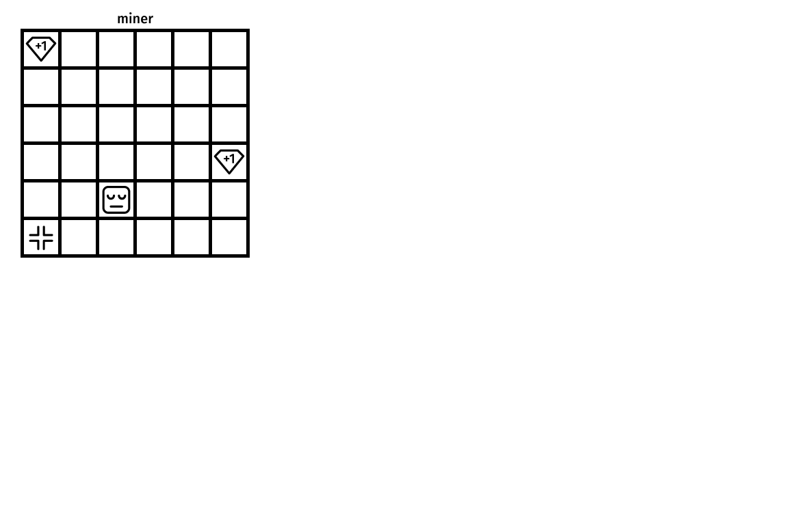
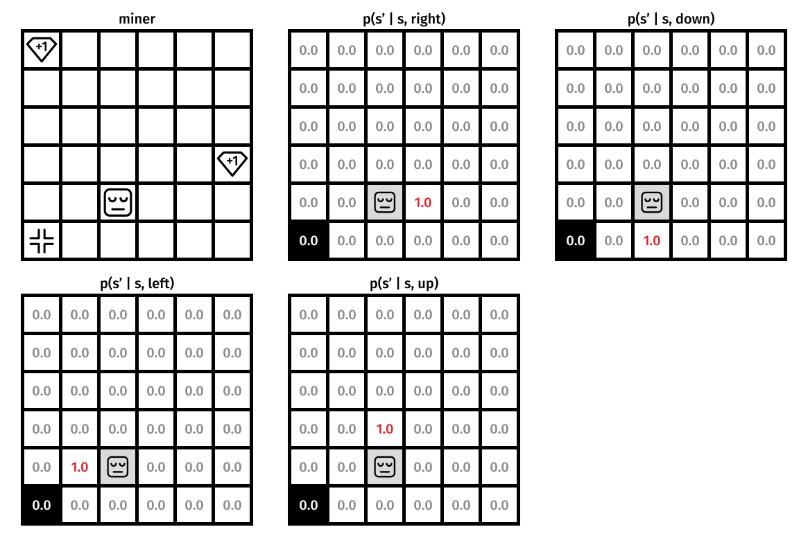
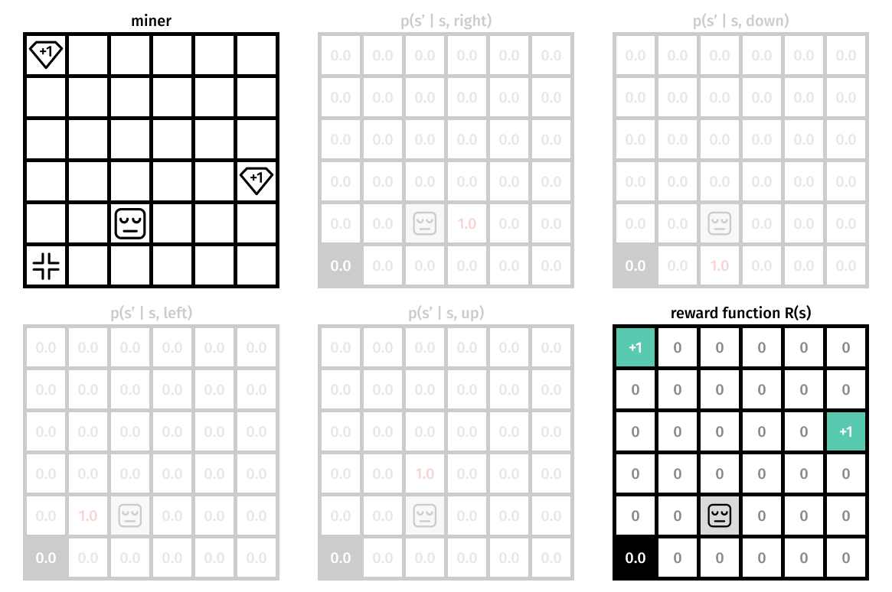

Introduction to RL
Florin Gogianu
Evaluation

Train an agent to solve Crafter!
You will need to provide a report containing:
- proper evaluation curves of the trained agents
- description of the algorithms
- interesting behaviours you observed
What is Reinforcement Learning?
The environment
The environment. Transition probability.
The environment. Reward function.
The environment
The dynamics of the MDP is defined by: $$ p(s', r | s, a) \doteq \text{Pr} \{S_t = s', R_t = r \;\vert\; S_{t-1} = s, A_{t-1} = a \} $$ From it we can compute state-transition probabilities: $$ p(s' | s, a) \doteq \sum_{r \in \mathcal{R}} p(s', r | s, a) $$ Or expected rewards for state-action pairs: $$ r(s, a) \doteq \sum_{r \in \mathcal{R}} r \sum_{s' \in \mathcal{S}} p(s', r | s, a) $$
we rarely have access to the dynamics!